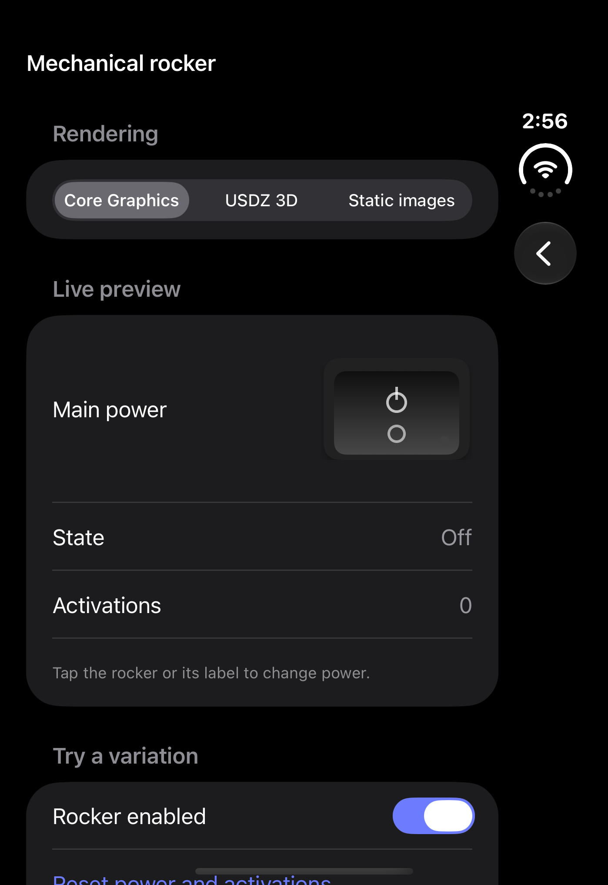
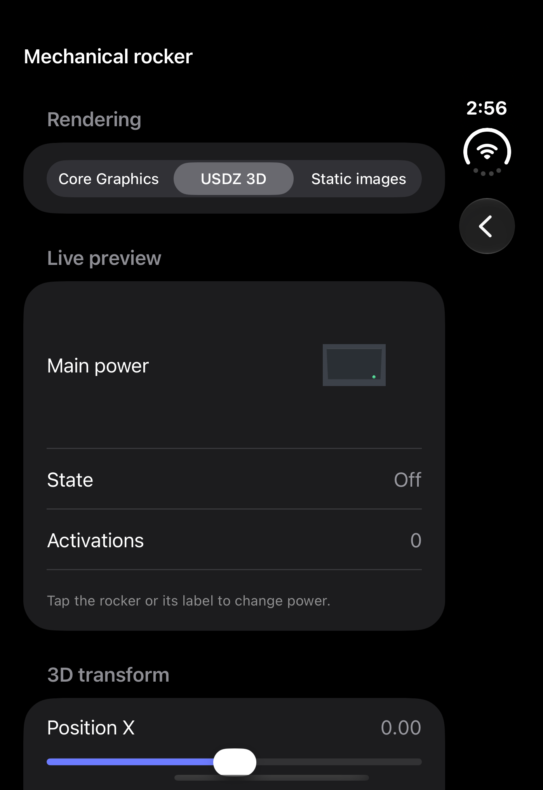
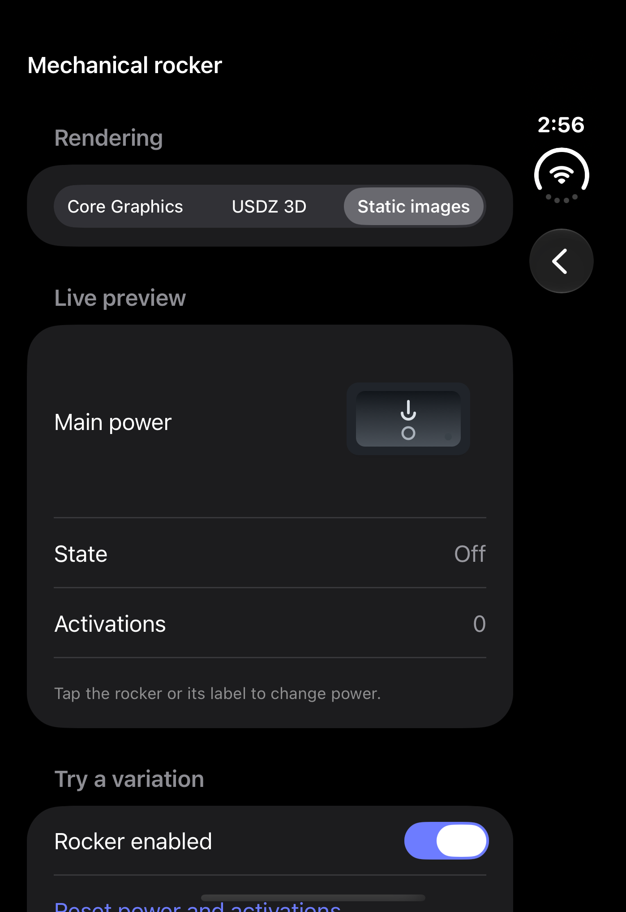

Draw the rocker with Core Graphics
The Core Graphics implementation starts with a fixed 116×78 design space, then scales every coordinate for the actual SwiftUI canvas. That makes the bevel, shadows, markings, and lamp sharp at any display size.
let scale = min(size.width / 116, size.height / 78)
let rockerRect = CGRect(
x: (size.width - 96 * scale) / 2,
y: (size.height - 64 * scale) / 2,
width: 96 * scale,
height: 64 * scale
)
let bezel = rockerRect.insetBy(dx: -8 * scale, dy: -7 * scale)Animate a number, not a Boolean
RockerCanvas stores progress from 0 to 1. The Boolean updates that scalar over 180 milliseconds; the scalar moves the face six design points and controls the gradient direction and green indicator. With Reduce Motion enabled, it jumps directly to the destination.
withAnimation(.easeInOut(duration: 0.18)) {
progress = isOn ? 1 : 0
}
let faceOffset = (0.5 - progress) * 6 * scale
let face = rockerRect.offsetBy(dx: 0, dy: faceOffset)Use StudyRockerToggleStyle() when you want precise scalable artwork without a packaged scene or image asset. Read the complete Core Graphics implementation.
Render and animate the USDZ scene
The 3D version puts the bezel outside a named RockerPivot. The rocker face, I/O marks, and indicator are children of that pivot. Rotating the pivot tilts the moving assembly while leaving the recessed bezel still.
Load the package resource
RealityView loads the exact resource URL from Bundle.module. The model is oriented toward an explicit virtual camera, its visual bounds are normalized to a predictable size, and the gallery can apply a display position and rotation.
guard let url = Bundle.module.url(
forResource: "MechanicalRocker", withExtension: "usdz"
) else { return }
let model = try await Entity(contentsOf: url)
let bounds = model.visualBounds(relativeTo: nil)
let displayScale: Float = 1 / largestExtent
model.scale *= SIMD3(repeating: displayScale)Move only the mechanical pivot
When the binding changes, the implementation finds RockerPivot, stops any in-flight motion, and moves it to either endpoint: −12° for On or +12° for Off. This means fast repeated taps always end at the latest bound value.
let angle: Float = isOn ? -0.20944 : 0.20944
var destination = pivot.transform
destination.rotation = simd_quatf(angle: angle, axis: [1, 0, 0])
pivot.stopAllAnimations(recursive: false)
pivot.move(to: destination, relativeTo: pivot.parent,
duration: 0.18, timingFunction: .easeInOut)The gallery exposes X/Y/Z position plus pitch, yaw, and roll sliders only for this renderer. They transform the display root, so they are useful for studying camera framing without changing the rocker’s own pivot behavior. If the USDZ resource cannot load, the public style retains a working static-image switch.
Use StudyRocker3DToggleStyle(position:rotation:) for the accessible toggle, or StudyRocker3DModelView(isOn:position:rotation:) for a decorative standalone model. Read the complete RealityKit implementation.
Crossfade static exports
The third implementation is intentionally simple: it loads matching off/on PNG exports from the package bundle and changes opacity. There is no scene graph, geometry calculation, or lighting update at runtime.
ZStack {
RockerPNG(name: "MechanicalRocker-off")
.opacity(isOn ? 0 : 1)
RockerPNG(name: "MechanicalRocker-on")
.opacity(isOn ? 1 : 0)
}
.animation(reduceMotion ? nil : .easeInOut(duration: 0.18), value: isOn)Both PNGs use the same framing and transparent background as the original model. If an image is unavailable, the package draws a non-animated Core Graphics fallback so the control remains understandable. Use StudyRockerImageToggleStyle() when the visual is fixed and runtime cost is the priority.
Choose for the job



| Renderer | Strength | Tradeoff | Good fit |
|---|---|---|---|
| Core Graphics | Small, crisp, easily parameterized | Lighting and depth are hand-authored | Custom controls that must scale freely |
| USDZ 3D | Physical depth, real pivot hierarchy | Resource loading and RealityKit setup | Product or appliance studies with meaningful perspective |
| Static images | Lowest rendering work and predictable art | Fixed viewpoints and less customization | Artwork-led controls with few visual states |
Preserve native control behavior
The custom appearance never replaces the native toggle semantics. The label remains visible for Dynamic Type and becomes the VoiceOver name. The style supplies the On/Off value, respects SwiftUI’s enabled environment, and has one hit target.
- Toggle each renderer and verify exactly one binding change per activation.
- Switch renderers and confirm the power state and activation count remain unchanged.
- Disable the control and confirm visual dimming and blocked interaction.
- Enable Reduce Motion and confirm the destination state appears without the 180 ms transition.
- Check long labels, large Dynamic Type, VoiceOver activation, and light/dark appearance.
- For USDZ, rapidly toggle during load and verify the final pivot matches the binding.